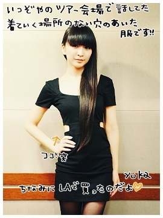

ページの先頭です
H1 文字のスタイル
太字
斜体
下線
強調
より強い強調
上付き
下付き
太字下付き
H1 文字のフォント
MS P明朝
MS Pゴシック
HG丸ゴシックM-PRO
Comic Sans MS
Westminster
Lucida Sans
位置
センタリング
しました。
センター見出し
ライト見出し
中央段落
右段落
HRタグ
1.HRのみ
2.size="5"
3.width="100"
4.width="200"
5.width="50%"
6.width="30%" align="left"
7.width="30%" align="center"
8.width="30%" align="right"
9.color="blue"
10.noshade
11.size="10" width="50%" color="green"
テキストをそのまま表示
★ ☆ ☆☆ ☆ ★
こんな感じです。
改行とスペースがそのまま表示されます。
★ ☆ ☆☆ ☆ ★
画像を表示
1.画像オリジナル

2.サイズ調整
3.枠付
4.文字との相関
1行目
2行目は こちら
3行目
位置はalign で調整(middle)
位置はalign で調整(bottom)
回り込みはalign(left,right)で
回りこんでるはずfakdjsfajsdflkajsdfja;lskdj
回り込みを解除するのはbrでclear属性を含ませる
リンク
テストへのリンク
テストへのリンク(新しいウィンドウ)
ページのトップに移動
ページのボトムです
リスト
- GK
- DF
- MF
- FW
- disk type
- circle type
- square type
- いち
- に
- さん
- し
- 1
- 2
- 3
- 4
画面分割
画面分割へのリンク
縦分割のリンク